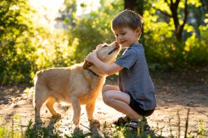

Juntos podemos fazer a diferença na vida dos animais!
A AdoPet ONG é uma organização sem fins lucrativos dedicada a resgatar, cuidar e encontrar lares amorosos para animais abandonados. Nossa missão é promover o bem-estar animal e conscientizar a comunidade sobre a importância da adoção responsável.
Com uma equipe apaixonada e voluntários dedicados, trabalhamos incansavelmente para garantir que cada animal sob nossos cuidados receba o amor, atenção e cuidados veterinários necessários. Acreditamos que todos os animais merecem uma segunda chance e um lar cheio de carinho.
Explore nosso site para conhecer mais sobre nossa história, os animais disponíveis para adoção e como você pode se envolver como voluntário. Juntos, podemos transformar vidas e criar um futuro melhor para nossos amigos de quatro patas!
